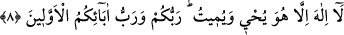
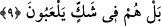

dolayı “Eğer şeksiz ve şüphesiz yakîni isteyen kimseler iseniz…” anlamı taşır.
8. O’ndan başka ilâh yoktur. (Her şeyi O) yaşatır ve öldürür. Sizin de Rabbiniz,
önceki atalarınızın da Rabbidir.
“O’ndan başka ilâh yoktur” Çünkü ondan başka yaratıcı yoktur. Bu ifâde, bir önceki
hükmü takrîr ve beyân etmekte olan bir cümledir.
“Yaşatır ve öldürür” Her zaman müşâhede edildiği gibi, kudretiyle cansızda hayatı,
canlıda ölümü îcâd eder. Yani bunun açık bir bilgiyle bilinmesi müşâhedeye benzer.
Zâhir olan durum, müşâhedenin eserle alâkalı olduğudur. Bilinen şey, diriltme ve
öldürme işidir. Müşâhede edilen ise canlıdaki hayat, ölüdeki ölüm eseridir.
et-Te’vîlâtü’n-Necmiyye’de şöyle denilmektedir: Allah Teâlâ cemâl sıfatlarının
tecellîsi ve muhabbetinin nûruyla velîlerinin kalplerini diriltir. Celâl sıfatlarının
tecellîsiyle de onların nefislerini öldürür.
“Sizin de Rabbiniz”; yani O, sizi yaratan ve rızıklandıran Rabinizdir. “Önceki
atalarınızın da Rabbidir”
et-Te’vîlâtü’n-Necmiyye’de şöyle denilmektedir: Allah Teâlâ Âdem’in, evlâdlarının
ve babalarının Rabbidir. Muhammed b. Ali Bâkır şöyle demektedir: Bizim babamız
olan Âdem’den önce binden fazla Âdem gelip geçmiştir.
Şeyh İbn Arabî (k.s.) Fütûhât-ı Mekkiyye’de dünyânın hâdis olduğu konusunda zayıf
bir hadis zikretmiş ve şöyle anlatmıştır: Âdem’den önce bin Âdem gelip geçmiştir. İbn
Arabî Kâbe’yi tavaf esnâsında kendisine bir keşif ve müşâhede cârî olup bu esnâda
ruhlardan tevessül eden bir takım insanlar görmüş ve onlara kim olduklarını sormuş,
onlar da İbn Arabî’ye kendilerinin Âdem’den kırk bin yıl önceki dedeleri oldukların
söylemişlerdir. Şeyh İbn Arabî, bu durumu Hz. İdris’e (a.s.) sordum, beni bu keşifte ve
haber husûsunda tasdik etti ve biz peygamberler topluluğu olarak âlemin hâdis olduğuna
inanır, âlemin evvelini bilmeyiz. Kâinatın ilk ve evvellerini bilmek sadece Allah’a
mahsustur, dedi demektedir.[204]
9. Fakat onlar, şüphe içinde oynuyorlar.
“Ama onlar, şüphe içinde oynuyorlar” Farsça olarak şöyle de ifâde edilmiştir:
“Fakat onlar şüphe içindedirler…”
Onlar, Allah Teâlâ’nın bahse konu olan bu iş ve tasarruflarında şüphe içinde olup